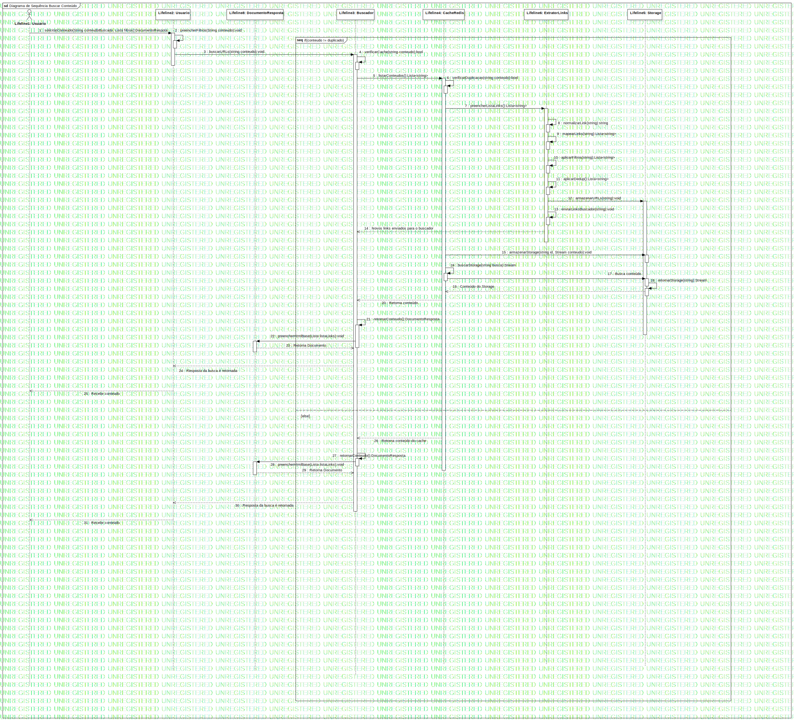

Interaction1
UMLInteraction
Projeto 2
::
Model
::
Buscar conteudo
::
Interaction1
Description
none
Diagrams

Diagrama de Sequência Buscar Conteúdo
Fragments
if(conteudo != duplicado)
Participants
Lifeline1: Usuario
Lifeline2: Usuario
Lifeline3: Buscador
Lifeline4: CacheRedis
Lifeline5: Storage
Lifeline6: ExtratorLinks
Lifeline8: DocumentoResposta
Messages
Message1 (Lifeline1→Lifeline2)
Message2 (Lifeline2→Lifeline2)
buscarU (Lifeline2→Lifeline3)
Message3 (Lifeline3→Lifeline3)
Message4 (Lifeline3→Lifeline4)
Message5 (Lifeline4→Lifeline4)
Message6 (Lifeline4→Lifeline6)
Message8 (Lifeline6→Lifeline6)
Message9 (Lifeline6→Lifeline6)
Message10 (Lifeline6→Lifeline6)
Message11 (Lifeline6→Lifeline6)
Message7 (Lifeline6→Lifeline5)
Message12 (Lifeline6→Lifeline6)
Novos links enviados para o buscador (Lifeline6→Lifeline3)
Message13 (Lifeline4→Lifeline5)
Message15 (Lifeline4→Lifeline4)
Busca conteúdo (Lifeline4→Lifeline5)
Message14 (Lifeline5→Lifeline5)
Conteúdo do Storage (Lifeline5→Lifeline4)
Retorna conteúdo (Lifeline4→Lifeline3)
Message16 (Lifeline3→Lifeline3)
Message17 (Lifeline3→Lifeline8)
Retorna Documento (Lifeline8→Lifeline3)
Resposta da busca é retornada (Lifeline3→Lifeline2)
Recebe conteudo (Lifeline2→Lifeline1)
Retorna conteúdo do cache (Lifeline4→Lifeline3)
Message18 (Lifeline3→Lifeline3)
Message19 (Lifeline3→Lifeline8)
Retorna Documento (Lifeline8→Lifeline3)
Resposta da busca é retornada (Lifeline3→Lifeline2)
Recebe conteúdo (Lifeline2→Lifeline1)
Properties
Name
Value
name
Interaction1
stereotype
null
visibility
public
isReentrant
true
Owned Elements
Diagrama de Sequência Buscar Conteúdo